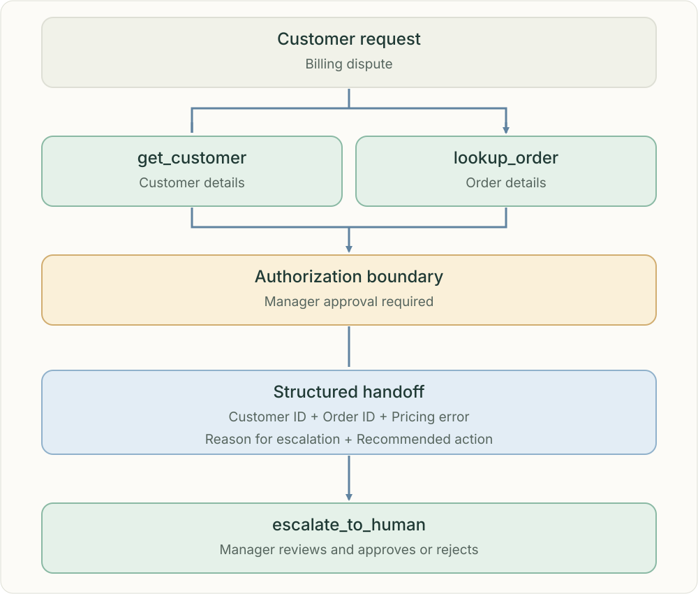

Recognize the boundary. Hand over the evidence.
An agent can gather facts without having authority to approve every action. When a billing dispute requires manager approval, stop the restricted action and transfer a structured case to an authorized person.

Read-only tools gather the facts; a restricted action waits for a manager’s decision.
Separate knowledge from permission
get_customer and lookup_order retrieve relevant information within the caller’s permitted scope. Knowing that a pricing error occurred does not authorize the agent to issue a refund or change a charge. Application code must enforce access and approval requirements before any restricted action.
Make the handoff actionable
Pass the customer ID, order ID, identified pricing error, reason for escalation and recommended action. Include supporting evidence and unresolved uncertainties, and distinguish confirmed facts from suspected errors. Send only information necessary for the review.
Escalation is not approval
escalate_to_human routes the case; it does not approve the recommendation. The manager may approve, reject or request more information. Preserve the review status and decision in durable state so the workflow can resume without repeating actions.
Avoid bypassing the boundary
Do not split a restricted action into smaller actions to evade a limit, or retry it through another tool. Before executing an approved change, validate that the approval applies to this case and action; prevent duplicate execution on retries.
Related topics
Practice
What input is missing? Who owns the next action? What evidence must survive? Explain the failure before choosing a component.
Sources & scope
Anthropic · How we built our multi-agent research systemAnthropic · When to use multi-agent systems
Independent learning guide · Reviewed 25 October 2026.